Cómo se usa la app en el galpón, paso a paso.
Para quien empieza hoy y para quien ya la usa.
Versión 4 · noviembre de 2026. Reemplaza a la versión 3, que queda guardada junto con las anteriores (el historial de versiones está al final). Las capturas son de la app real con datos de prueba; los nombres de las personas son de ejemplo.
Para qué sirve la app y cómo entrar.
La app reemplaza la planilla y la memoria. Ventas consulta en la app cuánto hay y dónde está. Si un palet se movió y nadie lo registró, la app miente: alguien lo va a buscar donde no está, o se vende algo que no existe.
No hace falta ser rápido con el celular. Hace falta no dejar nada para después.
Se abre en el navegador del celular, como una página web. Tu supervisor te da un usuario y un PIN de 4 números.
juan.La app te lleva a tu puesto: el clarkista a Mover, control a Recorrida, supervisión al Resumen.
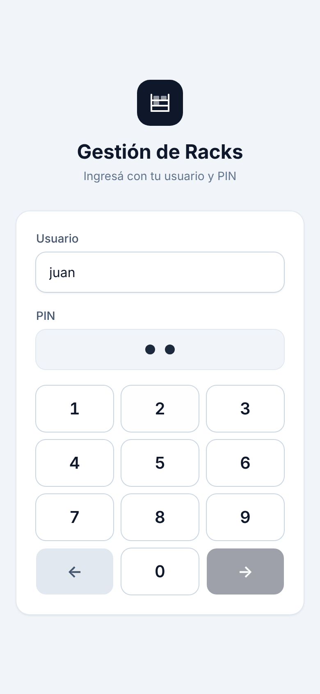
| Qué es | |
|---|---|
| Arriba a la izquierda | El nombre de la app. Tocándolo volvés a tu pantalla principal. |
| Arriba a la derecha | Tu nombre y tu puesto. Fijate que sea el tuyo: si el celular es compartido, puede haber quedado abierta la sesión de otro. Manual v4 abre este manual, con su número de versión, y Salir cierra tu sesión. |
| El medio | Lo que estás haciendo. |
| La barra de abajo | Las secciones que podés usar. Si no entran todas, el resto está en ⋯ Más. |
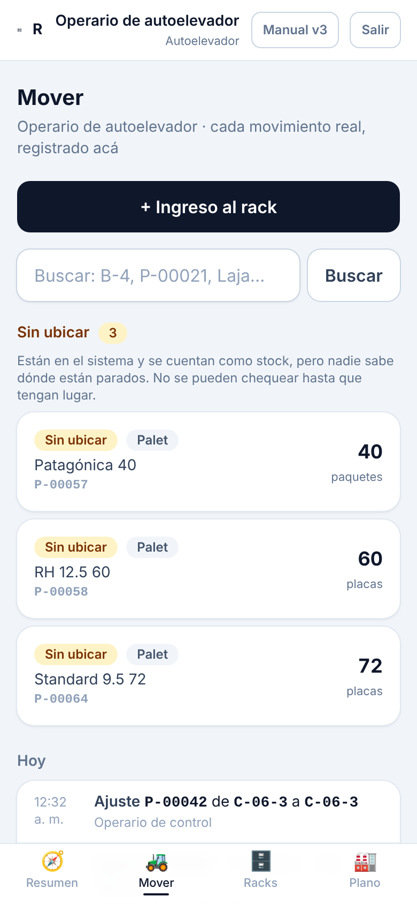
Las palabras que vas a leer todo el tiempo.
Los racks están organizados en grupos, con una letra cada uno: A, B, C, D… Cada hueco donde entra un bulto es una posición, y cada posición tiene un código pintado en el fierro. Hay dos tipos de rack.
El nivel 1 es el piso y el más alto es arriba; con 3 niveles, el del medio es medio. En la app vas a leer, por ejemplo, D-06-3 · arriba.
En el penetrable los palets se guardan uno detrás de otro. El clark entra por el pasillo y deja el primero al fondo, contra la pared. El código tiene un número más: la profundidad.
B-07-1-1 está ocupada, no se puede llegar a B-07-2-2. La app lo sabe y te avisa (sección 3).Por cómo quedaron ubicados en la planta, algunos grupos tienen la columna o la calle 01 a la derecha. En la app esos grupos se dibujan igual que en la realidad: la 01 a la derecha. Los códigos del fierro no cambian.
Lo vas a ver en el mapa de racks y también en los botones para elegir la posición: en esos grupos las columnas aparecen de mayor a menor (08, 07… 01).
Un bulto sin ubicar está en el galpón y cuenta como stock, pero no está en ninguna posición del rack. Por ejemplo, un palet que quedó en el piso porque el rack estaba lleno. Es una situación de paso: hay que buscarle lugar lo antes posible.
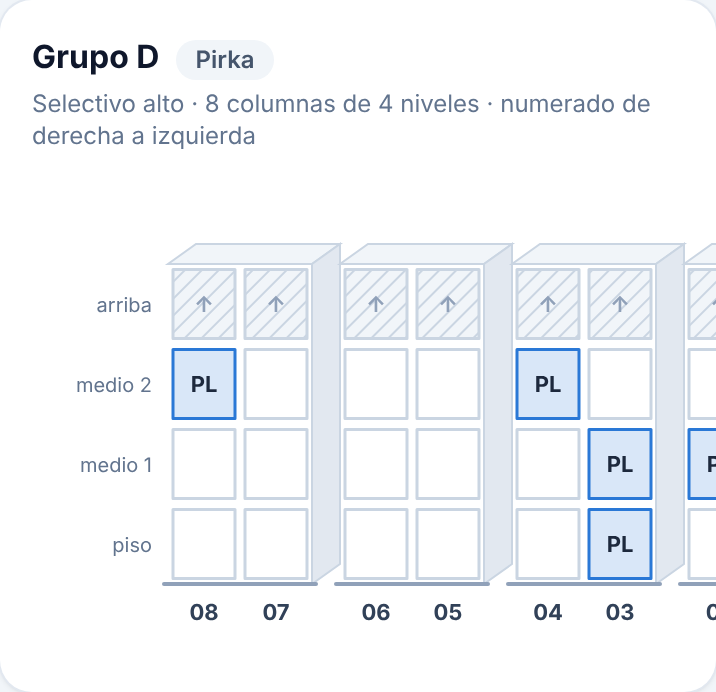
Un bulto es lo que el clark levanta de una vez: un palet, un optimizado, un montón de producto suelto o un objeto. Cada bulto tiene un código único que le pone la app cuando entra: P-00021. Ese código lo acompaña hasta que se va del galpón. Un bulto puede llevar un solo modelo (48 paquetes de Laja) o varios mezclados (30 de Laja y 10 de Ekos, siempre como suelto).
| Packaging | Cuándo se usa | Ejemplo |
|---|---|---|
| Palet | El armado de fábrica, con la cantidad normal de cada modelo. La app la propone sola. | Laja: 48 paquetes. |
| Optimizado | Un palet cargado de más, con su propia cantidad normal. Es más alto. | Laja: 60 paquetes. |
| Suelto | Cualquier otra cantidad: lo que sobró, un palet abierto, producto apilado. La cantidad se escribe siempre: no hay dos sueltos iguales. | Laja: 23 paquetes. |
| Objeto | Algo que ocupa lugar en el rack pero no es stock para vender. Se describe con palabras. | "6 sillas a reparar". |
Cada bulto de producto es de primera o de segunda. Vale igual para placas, piedras y pisos, y es del bulto entero: un palet es de una o de la otra.
Merma es el producto que se pierde o se arruina en el depósito y no sale vendido: una rotura al manipular, un accidente con el autoelevador, suciedad de palomas, daño de roedores, humedad u hongos, agua de una gotera.
Se registra siempre, en el momento, con el motivo que corresponda. Resta del stock como un egreso, pero se cuenta aparte: así se sabe cuánto se pierde, por qué y dónde.
Cada grupo de racks es de una empresa, y cada modelo también. Lo normal es que los productos de cada una estén en sus racks. Si guardás un palet en un rack de la otra, la app te deja -a veces no hay otro lugar- pero te avisa en ámbar y lo marca para reacomodarlo cuando se pueda.
Cada modelo tiene cargado cuántos m² ocupa una unidad (por ejemplo, una placa 0,3 m² o un paquete de piedra 0,26 m²). Así el stock también se ve en m², y a diferencia de placas y paquetes, los m² se pueden sumar entre todas las líneas.
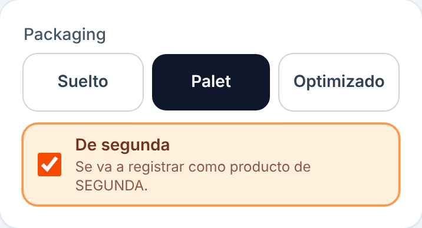
Todo lo que entra, sale o se mueve del rack pasa por vos.
Es lo primero que ves al entrar:
B-4), por código (P-00021) o por modelo (Laja).Cuando llega un palet de producción para guardar, tocá + Ingreso al rack y completá de arriba hacia abajo:
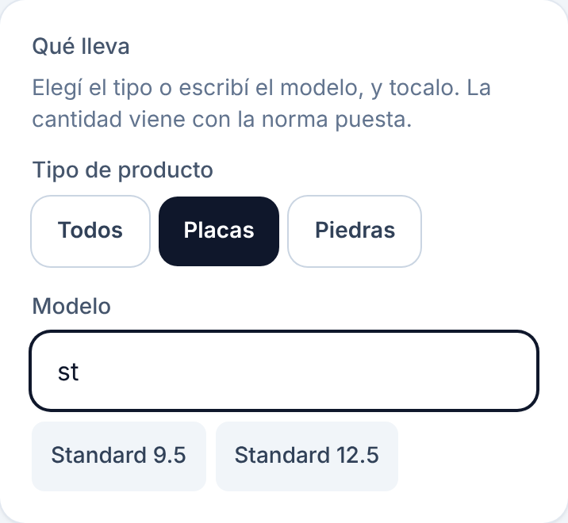
La app crea el bulto, le pone su código (P-00061) y te lo muestra. También aparece en la lista Hoy.
Si no hay lugar, o el que hay está reservado, marcá Sin ubicar en vez de elegir una posición. Cuenta como stock igual y va a la lista de pendientes.
Tocá Objeto y escribí qué es, con palabras que entienda cualquiera: "6 sillas a reparar". No lleva modelos, cantidades ni categoría.
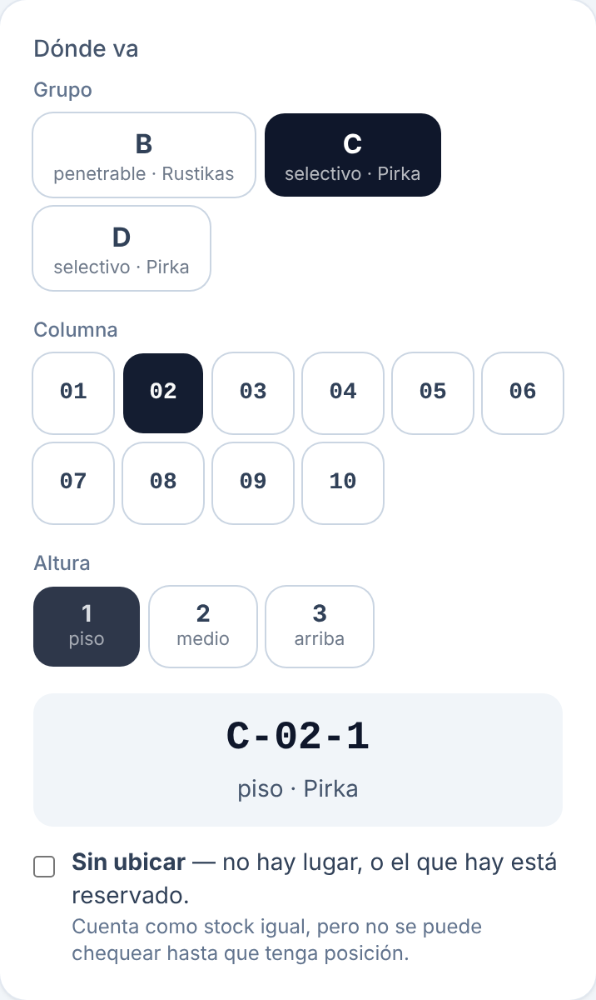
La app revisa cada movimiento antes de guardarlo. Si algo no cierra, no guarda nada y te explica por qué en un cartel rojo arriba del formulario. No es un error de la app: te está frenando antes de que el sistema quede mal.
| El cartel dice | Qué pasa | Qué hacer |
|---|---|---|
| "…el paso está tapado" | En un penetrable elegiste una posición del fondo o de arriba, pero hay palets que te cortan el camino. El cartel dice cuáles: "Primero hay que bajar P-00001 (A-01-1-1)…" | Elegí otra posición, o primero reubicá los que tapan. |
| "No entra: …" | Cada nivel tiene una altura libre, y el palet tiene que caber. Si el administrador le puso a ese grupo aire arriba del bulto (por ejemplo 10 cm, para levantarlo por encima del larguero), también tiene que sobrar ese aire: con 10 cm, un palet de 1,40 m no entra en un hueco de 1,45 m. El cartel dice hasta cuánto entra. En un penetrable, un optimizado alto puede entrar ocupando también el hueco de arriba, si está libre: la app lo permite y marca las dos. | Elegí un nivel más alto o una posición de otro grupo. |
| "…ya tiene el bulto…" | Mientras tenías la pantalla abierta, otro clarkista ocupó esa posición. | Elegí otra. |
Para sacar o mover algo que ya está en el rack, primero buscalo. En el buscador de Mover podés escribir:
| Escribís | Encuentra |
|---|---|
B-03-3-3 | El bulto de esa posición. |
B-03 | Todo lo de la calle 03 del grupo B. |
P-00034 | Ese bulto, por su código. |
Laja | Todos los bultos que llevan Laja. |
Tocá el resultado para abrir la ficha del bulto.
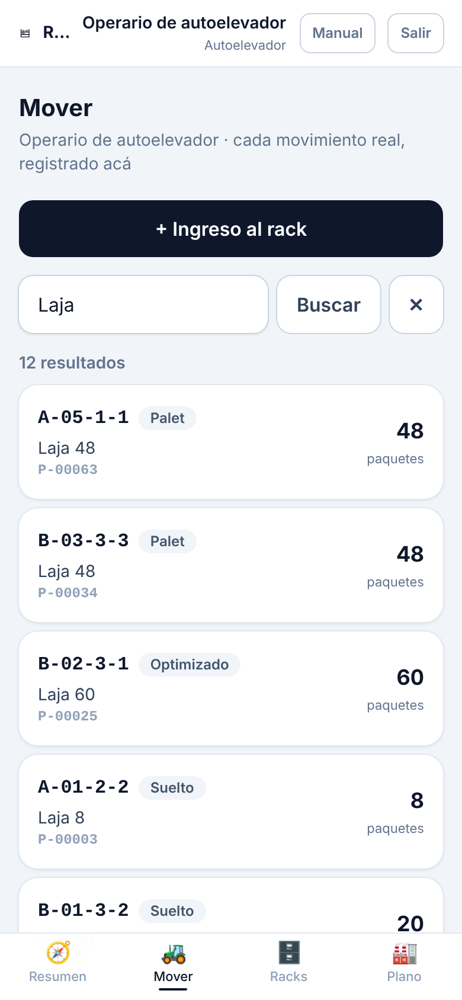
Arriba dice dónde está, el packaging, la categoría y el código. Abajo, qué lleva y si control lo chequeó. Desde acá se hacen tres cosas:
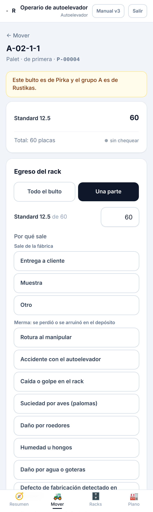
Si un bulto se rompió, se ensució o se arruinó, se registra como un egreso con un motivo de merma:
| Motivos de merma |
|---|
| Rotura al manipular · Accidente con el autoelevador · Caída o golpe en el rack · Suciedad por aves (palomas) · Daño por roedores · Humedad u hongos · Daño por agua o goteras · Defecto de fabricación detectado en depósito · Deterioro por antigüedad · Otra merma |
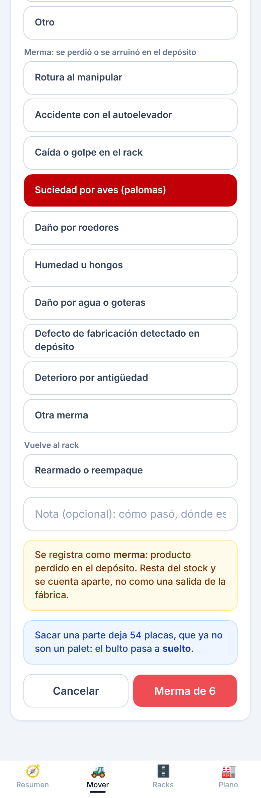
Reubicar no suma ni resta stock: el bulto sigue siendo el mismo, con su código.
Cuando haya lugar, buscá el bulto en la lista Sin ubicar de Mover, abrilo y usá Reubicar para darle posición. Mientras está sin ubicar, control no lo puede verificar.
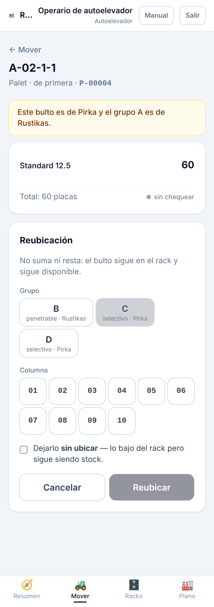
Si un bulto se ingresó de primera y después se detecta que es de segunda (o al revés), se hace un pasaje de categoría:
No cambia la cantidad ni el lugar. Queda en el historial con tu nombre, la hora y el porqué.
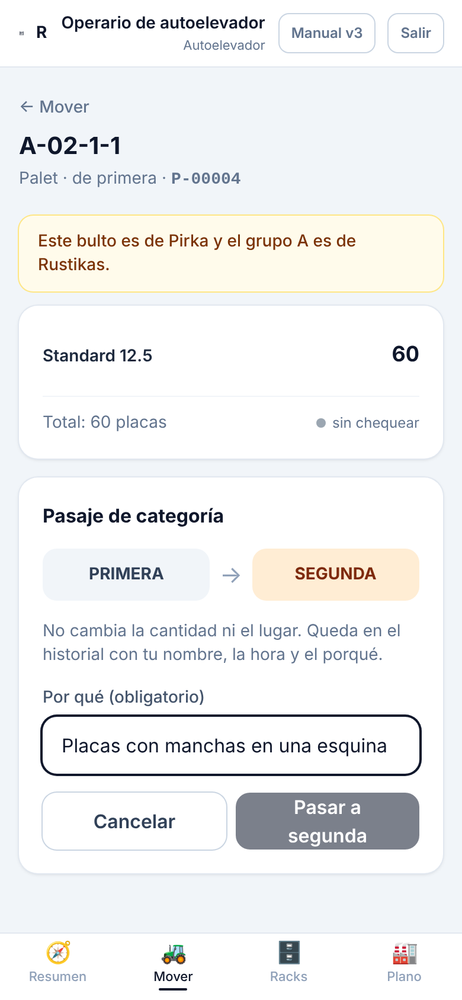
Racks es el mapa de todas las posiciones, como se ven paradas en el galpón: en 3D por defecto, o en grilla con Plano. Cada cuadradito es una posición: tocala para ver qué hay. Arriba te dice cuánto está ocupado y si hay bultos en racks de la otra empresa.
| Ves | Significa |
|---|---|
| PL PI | Ocupada. La marca dice la línea: PL placas, PI piedras. |
| Recuadro vacío | Libre. |
| Ob | Un objeto. |
| Rayado con ↑ o ✕ | Fuera de uso: el clark no llega (↑) o está excluida (✕). |
| Un ! en la esquina | Producto de otra empresa. |
Plano (en la barra de abajo) es el galpón visto desde arriba: dónde está cada grupo, las calles y los accesos. Sirve para orientarte los primeros días.
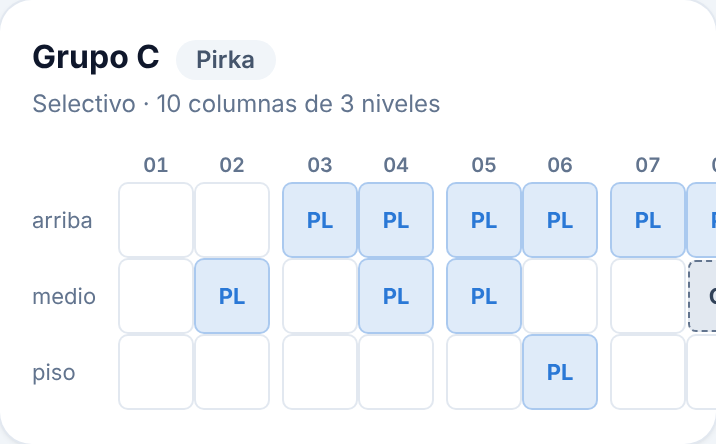
Recorrer el rack y confirmar que lo que dice la app es lo que hay.
Aunque todos registren bien, con el tiempo aparecen diferencias: un palet que se movió sin registrar, una cantidad mal contada, una categoría mal cargada. Control encuentra esas diferencias y las corrige. Es el único puesto que puede corregir lo que dice el sistema, y cada corrección queda registrada con un motivo: así se sabe cuánto y en qué se equivoca el sistema.
Cuando chequeás una posición, esa información es muy confiable hoy. Con los días vale cada vez menos, porque pudo haber pasado algo. La app lo mide así: un chequeo vale la mitad a los 30 días. Y una posición donde siempre aparecen diferencias baja aunque se haya mirado ayer.
| Estado | Qué significa |
|---|---|
| Confiable | Chequeada hace poco y con buen historial. Vale 50 % o más. |
| A chequear | Empieza a envejecer. Entre 25 % y 50 %. |
| Poco confiable | Hace mucho que nadie la mira. Menos de 25 %. |
| Nunca chequeado | No tiene ningún chequeo, o se movió después del último. No cuenta como malo: cuenta como desconocido. |
Es tu pantalla principal. Arriba está el índice de confiabilidad de todo el rack. Si hay una carga inicial abierta, aparece un recuadro celeste. Abajo, las posiciones en el orden en que conviene chequearlas:
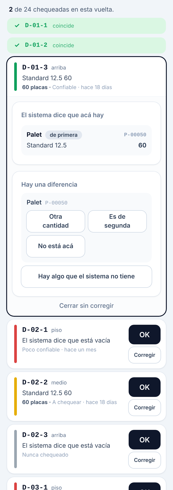
Hay cuatro botones. En todos tenés que elegir qué pasó (el motivo): así se sabe por qué se equivoca el sistema.
| Botón | Cuándo | Qué hace |
|---|---|---|
| Otra cantidad | El bulto está, pero hay más o menos. | Escribís cuánto hay de verdad de cada modelo. La app muestra la diferencia ("−17 placas"). |
| Es de segunda (o «Es de primera») | El bulto está registrado con la categoría que no es. | Lo pasa a la otra categoría. El motivo «Categoría equivocada» viene elegido. No cambia la cantidad ni el lugar. |
| Otra cantidad con merma | El bulto está, pero hay producto roto, sucio o arruinado. | Escribís cuánto hay sano y elegís Merma encontrada en el chequeo. La nota es obligatoria: contá qué encontraste. Solo aparece cuando hay menos de lo registrado. |
| No está acá | El sistema dice que hay un bulto y no está. | El bulto pasa a sin ubicar: el producto existe, lo que se perdió es saber dónde está. Si sabés algo, ponelo en la nota. |
| Hay algo que el sistema no tiene | Hay un bulto que el sistema no conoce. | Lo registrás como un ingreso: producto u objeto, packaging, De segunda si corresponde, tipo y modelo con el buscador, y cantidades. |
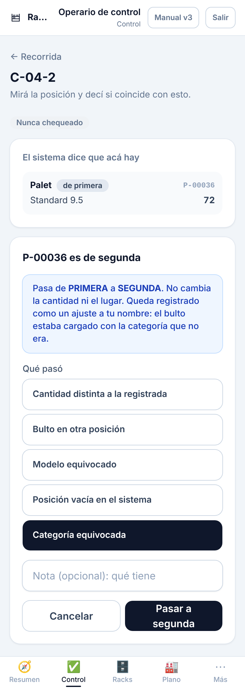
| Motivo | Cuándo usarlo |
|---|---|
| Cantidad distinta a la registrada | El bulto es el correcto pero la cantidad no. |
| Bulto en otra posición | El bulto existe pero está en otro lugar. |
| Modelo equivocado | Se cargó un modelo y en realidad es otro. |
| Posición vacía en el sistema | Había algo que nunca se registró. |
| Categoría equivocada | Está cargado de primera y es de segunda, o al revés. |
| Merma encontrada en el chequeo | Producto roto o arruinado que nadie registró. Cuenta como merma. |
Cada corrección cuenta como una diferencia en la confiabilidad: es un error que alguien cometió antes. Por eso se elige el motivo que más se acerque a lo que pasó, no el primero de la lista.
Si en una posición encontrás producto roto, mojado o sucio que nadie registró:
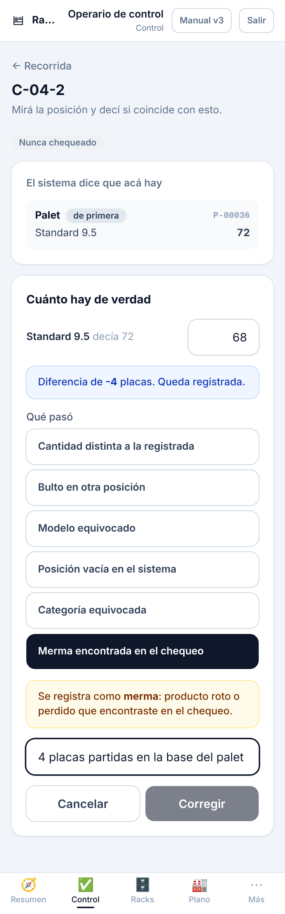
Cuando un grupo de racks empieza a usarse con la app, hay que cargar lo que ya estaba. Eso es la carga inicial. La abre el administrador y la hace control, una sola vez por grupo.
| Ves… | Tocás… |
|---|---|
| Nada | Está vacía |
| Algo que la app ya tenía y coincide | Está |
| Algo que la app ya tenía, pero no coincide | No coincide: te lleva al chequeo normal. |
| Un bulto que la app no tiene | Completás el formulario y Cargar. |
Al guardar, la app pasa sola a la siguiente pendiente.
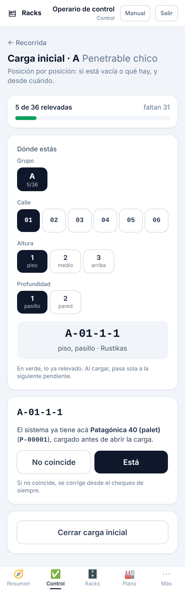
Elegí esa posición en Dónde estás (está en verde) y tocá Me equivoqué: deshacer. La posición vuelve a pendiente y la cargás de nuevo. No se borra nada: el error queda registrado como anulado.
Si según las medidas ese palet no debería entrar, o la posición figura fuera de uso, la app lo carga igual y te avisa. Se registra lo que hay. Pasale el aviso al administrador: lo que hay que revisar es la medida, no el palet.
Si según las medidas el palet de abajo no entra en su nivel, la app supone que sobresale y tapa la posición de arriba. Si al llegar ahí la ves tapada, tocá Sí, la tapa. Si la ves libre, tocá No, está libre y cargala como cualquier otra: la app te dice qué medida hay que corregir.
Cuando terminaste el grupo, bajá al final y tocá Cerrar carga inicial. La app te dice cuántas posiciones faltan; si cerrás igual, quedan como nunca chequeadas y aparecen en la recorrida normal. Desde ese momento el grupo se usa como cualquier otro.
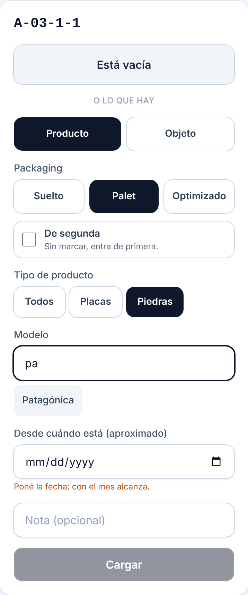
Para administrador, auditor, comercial y control.
Es la pantalla donde entra el administrador y el auditor. Arriba se elige de cuándo es la foto: Ahora, Ayer al cierre, Cierre de la semana pasada, Cierre del mes pasado, o cualquier día.
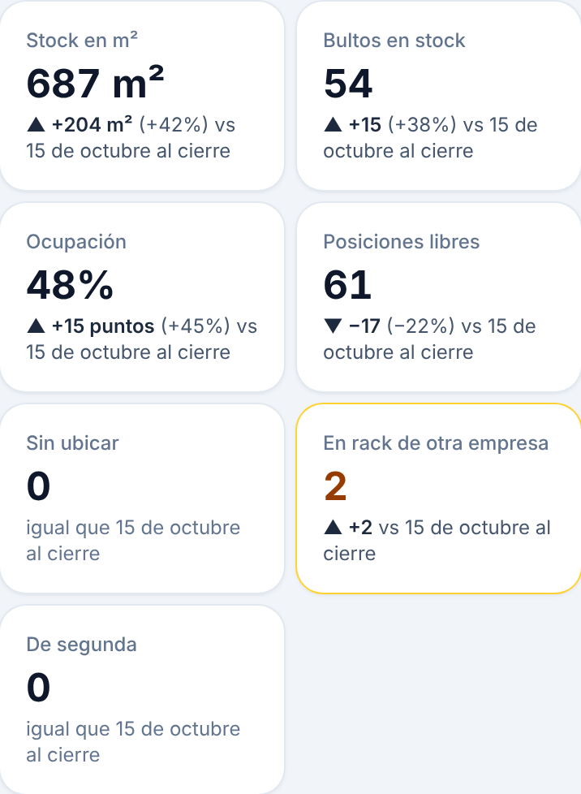
Todas las noches, apenas pasada la medianoche, la app guarda la foto del cierre del día: el stock, la ocupación con los racks de ese día, los m² y la confiabilidad de esa noche.
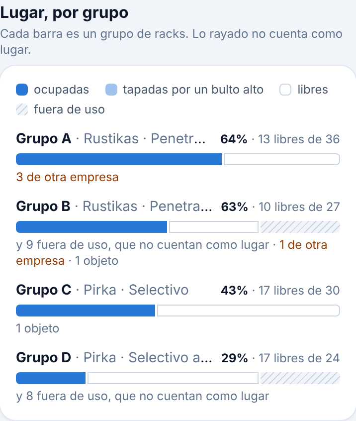
Arriba se elige el período: Hoy, Ayer, Anteayer, Esta semana, Semana anterior (de lunes a domingo), Mes en curso, Mes anterior, Últimos 30 o 90 días, Año en curso, o un desde–hasta.
Cada número se compara con el período anterior equivalente. Si el período está en curso, se compara con el mismo tramo: del 1 al 7 de noviembre contra del 1 al 7 de octubre; hoy hasta esta hora contra ayer hasta esta hora.
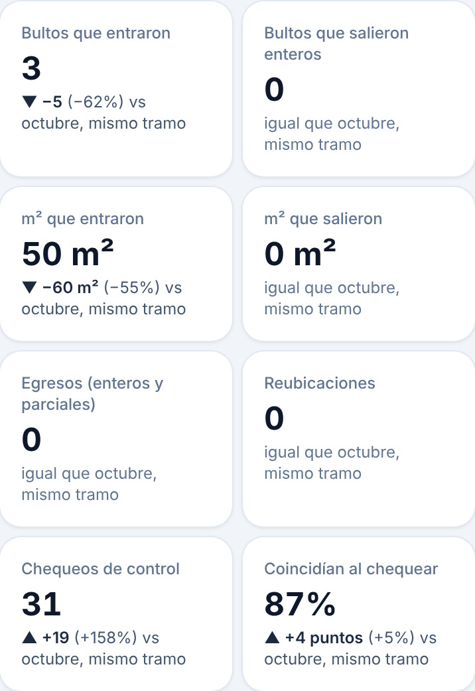
En Estadísticas, arriba aparecen los m² de merma del período comparados con el anterior. Más abajo, la sección Merma contesta:
En Movimientos, el filtro Merma trae todos los registros, y el CSV tiene la columna «Merma» para llevarlo a Excel.
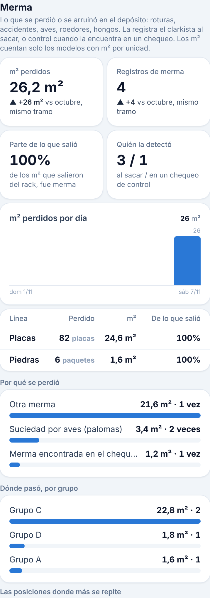
En Confiabilidad (en el celular, dentro de ⋯ Más), debajo del número de hoy, está "Cómo evolucionó", con los mismos períodos que Estadísticas. Todas las curvas van de 0 a 100 %, con líneas guía en 50 % (Confiable) y 25 % (A chequear), así se comparan a ojo. Un tramo sin nada medido deja un hueco: no es cero, es que no hay dato.
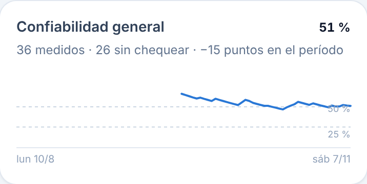
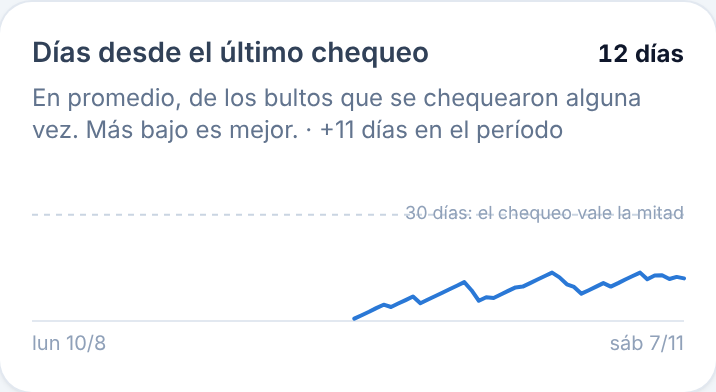
| Curva | Qué contesta |
|---|---|
| General y cuánto se miró alguna vez | ¿De cuánto del stock nos podemos fiar? Un 80 % sobre la mitad del stock no es lo mismo que sobre todo. |
| Días desde el último chequeo | Lo mismo, dicho en días. La línea marca los 30 días, cuando un chequeo vale la mitad. |
| Chequeos que hubo que corregir y correcciones por semana | ¿Se registra cada vez mejor? Si bajan, sí. |
| Por grupo, por altura, por tipo de mercadería, por empresa, por packaging | ¿Dónde está el problema? Por ejemplo, si los niveles de arriba o los sueltos se chequean menos. |
| Por modelo | Se elige con un botón; abajo hay una tabla con cuánto cambió cada modelo. |
| Por posición | Se escribe el código (por ejemplo B-07-2-1). |
Las curvas se arman con toda la historia de chequeos y movimientos. Única excepción: en la carga inicial, el «Está» sobre un palet que ya estaba cargado no deja registro, así que en esos casos la curva del pasado queda un poco más baja que lo que fue.
Stock: cada modelo con lo que hay por packaging, y lo de segunda aparte. Tocando un modelo se ve cada bulto y dónde está.
Movimientos: todo lo que pasó, con quién y cuándo. Se filtra por fecha, tipo, modelo y persona, y se descarga en CSV para Excel. El filtro Todo cambio de categoría junta los pasajes y las correcciones de control; cada uno muestra Primera → Segunda.
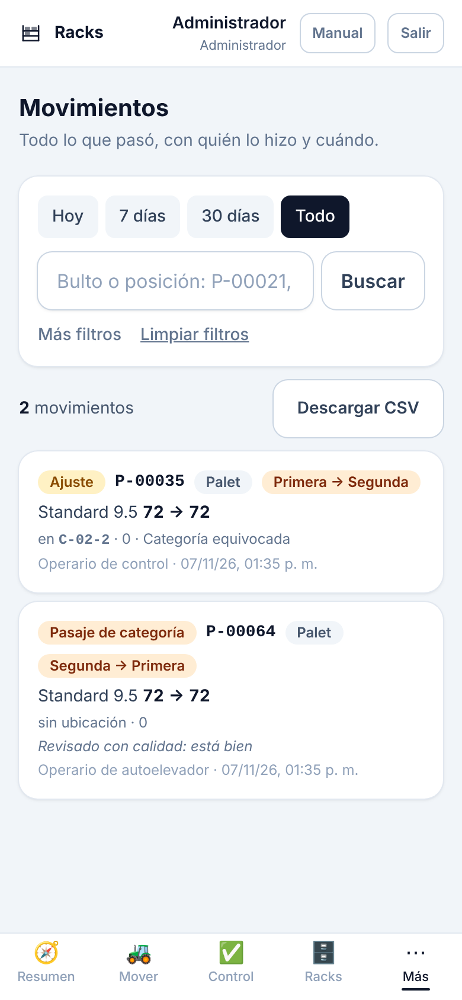
Lo que configura el administrador. Lo demás se hace desde las pantallas de siempre.
En Administración → Racks, Editar abre el formulario del grupo (la pantalla sube sola hasta él):
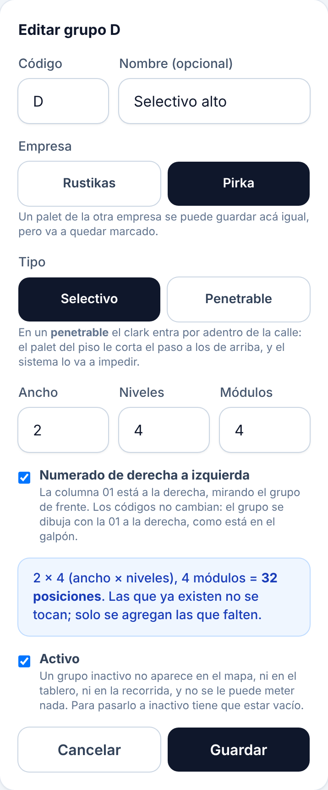
En Administración → Modelos, cada modelo tiene:
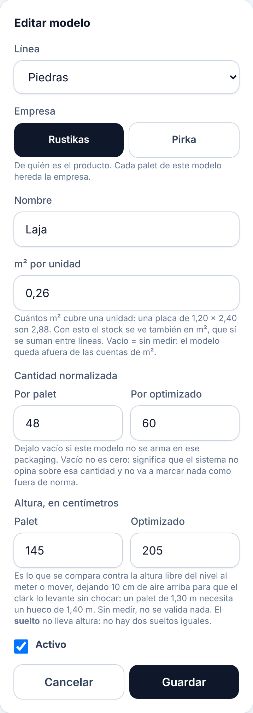
En Administración → Motivos están los motivos de egreso («Al sacar») y de corrección de control («Al corregir»). Se pueden agregar los propios y apagar los que no se usan: un motivo apagado no se ofrece más, pero el historial que lo usó se sigue leyendo.
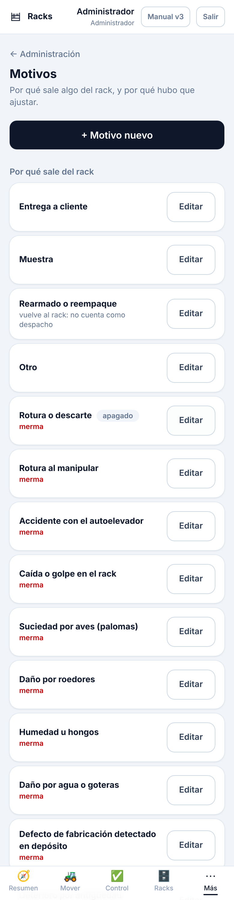
Qué hacer cuando algo no sale.
| Pasa esto… | Hacé esto |
|---|---|
| No puedo entrar: "usuario bloqueado". | Le erraste al PIN 5 veces. Esperá 5 minutos. Si no te acordás el PIN, pedile uno nuevo al supervisor. |
| "No se pudo contactar al servidor. El movimiento NO se guardó." | Se cortó la señal. Acercate a donde haya señal y hacé el movimiento de nuevo. No se guardó nada, así que no queda duplicado. |
| No aparece la posición donde quiero meter el palet. | Solo se ofrecen posiciones libres y que se pueden usar. Puede estar ocupada en el sistema, ser inalcanzable, estar excluida, o el grupo puede estar en carga inicial. Mirala en Racks. |
| Las columnas de un grupo aparecen al revés. | Es un grupo numerado de derecha a izquierda: la app lo muestra como está en el galpón. |
| En suelto, el botón de guardar no se habilita. | Falta la cantidad: el recuadro está en ámbar. Escribí cuántas hay de cada modelo. |
| En la carga inicial, el botón Cargar no se habilita. | Falta la fecha de "desde cuándo está". Con el mes alcanza. |
| La app dice que una posición está ocupada y está vacía (o al revés). | No la uses ni la fuerces. Avisale a control para que la chequee y la corrija. |
| "El paso está tapado". | En un penetrable, hay palets adelante o en el piso. Elegí otra posición o reubicá primero los que tapan. |
| "No entra: …" (altura). | El palet no cabe en ese hueco, o no le sobra el aire que pide el grupo. Elegí un nivel más alto o una posición de otro grupo. |
| Registré un ingreso con la cantidad o el modelo mal. | Avisale a control. No hagas un egreso para "compensar". |
| Ingresé de primera algo que es de segunda. | Si fue un error al cargarlo, avisale a control (lo corrige como «Categoría equivocada»). Si se detectó después, hacé el pasaje de categoría desde la ficha. |
| Se rompió o se ensució un bulto. | Registralo como merma: Egreso → todo o una parte → el motivo de merma. Si lo encuentra control, Otra cantidad → Merma encontrada en el chequeo. |
| Con «Otra merma» el botón no se habilita. | Ese motivo pide nota: escribí qué pasó. |
| En el chequeo no aparece «Merma encontrada». | Solo aparece cuando escribís una cantidad menor a la registrada. |
| Moví un palet y me olvidé de registrarlo. | Registralo ahora con Reubicar, apenas te acuerdes. Si ya no sabés dónde quedó, avisale a control. |
| Aviso ámbar de "otra empresa". | Se puede ingresar igual. Si hay lugar en un rack de la empresa correcta, usá ese. |
| En la pantalla aparece el nombre de otra persona. | Tocá Salir y entrá con tu usuario. Todo lo que hagas queda a nombre de quien figura arriba. |
| El Resumen de un día dice "reconstruida". | Esa noche no se guardó la foto automática. El stock es exacto igual. Si pasa seguido, avisale al administrador. |
Las palabras de la app, en una línea.
| Grupo | Un conjunto de racks iguales, identificado con una letra (A, B, C…). |
| Selectivo / Penetrable | Rack donde cada posición se alcanza directo / donde el clark entra a la calle y los palets van uno detrás de otro. |
| Posición | Un hueco del rack donde entra un bulto. Tiene un código: D-06-3, B-07-2-1. |
| Columna / Calle | El número después del grupo: columna en el selectivo, calle en el penetrable. |
| Nivel | La altura: piso (1), medio, arriba. |
| Profundidad | En un penetrable: pasillo (1) hasta pared o fondo. |
| Bulto | Lo que el clark levanta de una vez. Tiene un código P-00021. |
| Packaging | Cómo viene armado el bulto: suelto, palet, optimizado u objeto. |
| Primera / Segunda | La categoría del bulto. Todo entra de primera salvo que se marque. |
| Pasaje de categoría | Cambiar un bulto de primera a segunda o al revés, con el porqué. |
| Objeto | Algo que ocupa lugar en el rack y no es producto para vender. |
| Merma | Producto que se pierde o se arruina en el depósito (rotura, accidente, aves, roedores, hongos). Resta del stock y se cuenta aparte. |
| Módulo | En un selectivo, el tramo de rack entre dos parantes. Tiene varias columnas. |
| m² por unidad | Cuántos m² ocupa una unidad de un modelo. Con eso el stock se suma en m². |
| Ingreso / Egreso / Reubicación | Un bulto entra (suma stock) / sale, entero o una parte (resta) / cambia de posición (no cambia el stock). |
| Sin ubicar | Bulto que está en el galpón pero en ninguna posición. |
| Chequeo / Ajuste | Control confirma que una posición está como dice el sistema / la corrección que hace cuando encuentra una diferencia. |
| Confiabilidad | Cuánto se puede creer lo que dice la app. Baja con los días desde el último chequeo. |
| Olvidada | Posición que nadie chequea hace más de 60 días. |
| Fuera de uso | Posición donde no se guarda nada: el clark no llega o está excluida. |
| Carga inicial | El inventario de lo que ya estaba en un grupo al empezar a usar la app. |
| Resumen / Foto diaria | La foto del stock en un momento / la foto del cierre de cada día, guardada e inmodificable. |
| Estadísticas | Lo que pasó en un período, comparado con el período anterior equivalente. |
Para imprimir y tener a mano en el autoelevador.
D-06-3 = grupo D · columna 06 · nivel 3B-07-2-1 = grupo B · calle 07 · nivel 2 · profundidad 1 (pasillo)
Nivel 1 = piso. Profundidad 1 = la del pasillo.
Cada versión tiene su número, que se ve en el botón de la app, en la tapa, en el pie de cada hoja y en el nombre del archivo. Las versiones anteriores se guardan.
| Versión | Fecha | Qué cambió |
|---|---|---|
| 4 (vigente) | noviembre de 2026 | El aire arriba del bulto se configura por grupo y arranca en 0. En la carga inicial, «No, está libre» para una posición que figura tapada y no lo está. |
| 3 | noviembre de 2026 | Merma: qué es, cómo la registra el clarkista y cómo la encuentra control, los motivos y las estadísticas. Número de versión en todos lados. Esquemas de racks redibujados, con los módulos del selectivo y el autoelevador en el penetrable. |
| 2 | noviembre de 2026 | Escrito de cero para la app nueva: selector de posición por partes, buscador de modelos, primera y segunda, pasaje de categoría, carga inicial nueva, Resumen y foto diaria, Estadísticas, curvas de confiabilidad, m² y racks numerados de derecha a izquierda. |
| 1 | octubre de 2026 | Primera versión. |